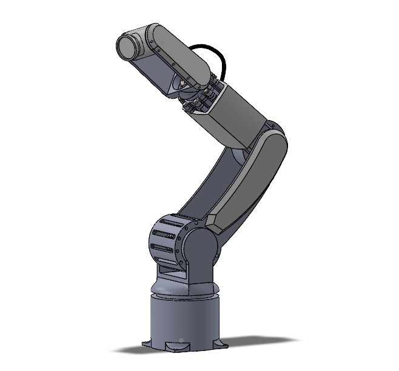
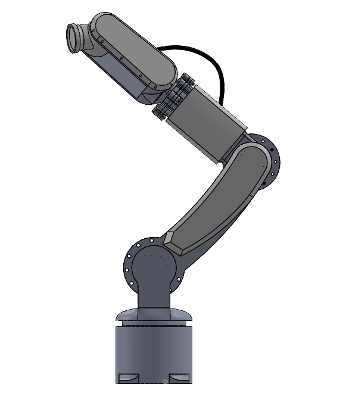
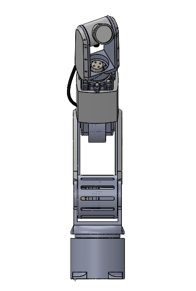
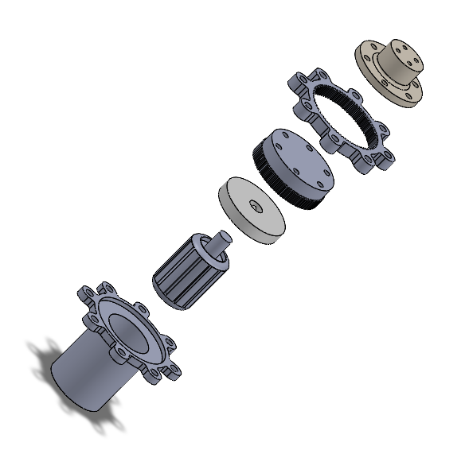
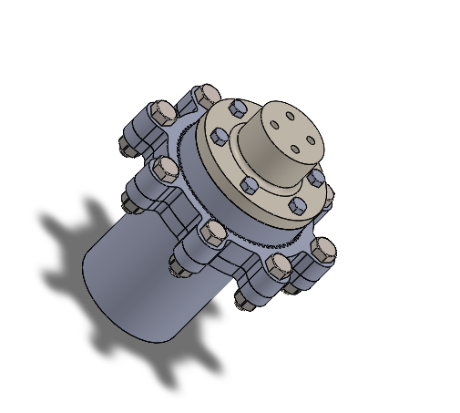

4-DOF Robotic Arm Model
Overview
A 4 degree-of-freedom robotic arm designed entirely from scratch in SolidWorks. Rather than a conventional gripper, the arm is built as a light-positioning platform — with the end effector carrying a light source, making it suited for precision lighting, photography rigs, or light-painting applications. All cables are routed internally through the arm links, keeping the exterior profile clean and uncluttered.

Mechanical Design
The arm was designed around four primary joints: base rotation, shoulder, elbow, and wrist. Each joint housing was modelled to be compact while leaving adequate clearance for internal cable routing — a deliberate design choice that avoids snagging hazards during operation and keeps the assembly looking intentional.
The structural links prioritise rigidity while keeping the overall assembly lightweight. Joint covers were designed as separate shell components, allowing them to be removed for maintenance access without disassembling the drivetrain.


Joint Design & Harmonic Drive
Each joint uses a harmonic drive transmission — a zero-backlash gear system consisting of a wave generator, flex spline, and circular spline. The wave generator deflects the flex spline into an elliptical shape, engaging teeth on the circular spline at two points simultaneously. As the wave generator rotates, the slight tooth count difference between the flex spline and circular spline produces a high reduction ratio in an extremely compact package.
Harmonic drives are the standard in precision robotic joints for good reason — zero backlash, high torque density, and a single-stage reduction ratio that would otherwise require multiple gear stages. For a light-positioning arm where repeatability matters, it was the obvious choice over a conventional planetary or spur gear arrangement.


End Effector & Light Mount
The arm terminates in a circular tool-mount flange designed to accept a light source. The flange geometry allows for quick tool changes while maintaining a rigid, low-slop connection at the wrist. Internal cable routing feeds power and signal lines directly through the wrist joint and out through the flange — no external cables visible on the finished assembly.

Design Decisions
- 4-DOF configuration — base rotation, shoulder, elbow, and wrist
- Internal cable routing throughout all links and joints
- Circular tool-mount flange at end effector for light source attachment
- Removable joint covers for maintenance access without drivetrain disassembly
- Compact joint housings designed around internal clearance requirements
- Rigid link geometry optimised for a favourable stiffness-to-weight ratio
What's Next
The CAD model is complete and intended for eventual fabrication. The plan is to manufacture the structural links from aluminium stock and 3D print the joint housings and covers. Motor selection and drivetrain sizing will follow once a target payload and reach spec is locked in. The light-mount flange will be prototyped first to validate the tool-change mechanism before committing to the full build.